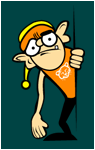

| |
:: Quality Team, Mission ::
The Uludag Quality Team aims to form a good starting
point for people of any level who wish to help and accelerate the
operation of the project. If you are always thinking "I want
to help, too" yourself, but do not know where to start, here
is your chance! The quality team, whose job is also to adapt the
newbies to the project according to their interests and skills,
will help you.
The mission of the Quality Team is to form a team
of people working to meet the requirements of the project such as
localization, documentation, application and version tests, bug
 reporting, user-interface test and evaluation, software development,
internationalization of web pages and documents, presenting the
project in a right way and reach new people.
The job of this team is to enhance the quality of the contribution
to the project and provide that it does not decend under a certain
level by canalizing your valuable contributions to the points where
it is needed. In this respect, the Quality Team presents an architecture
which finances itself in the context of human resources.
If you wish you can read the Quality
document for further information, or continue with the "What
can I do?" section.
|